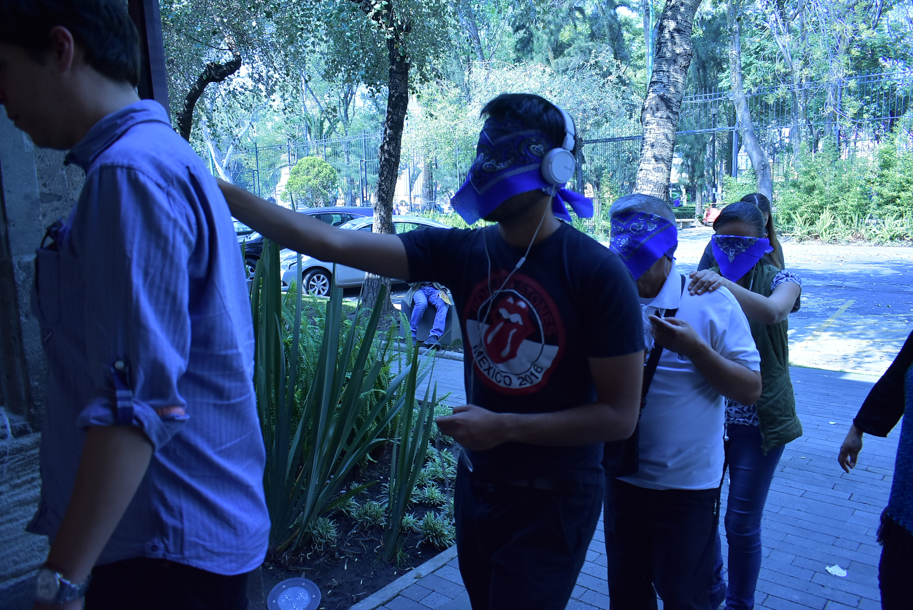
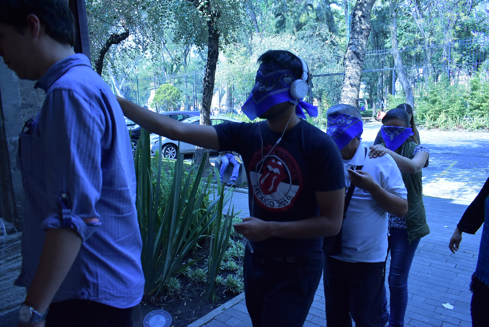

Así se siente mi barrio
Catégories: Installations interactives
Date:Août-Novembre 2018
GitHub: https://github.com/psotresc
L'installation de conception haptique multimodale «Así se siente mi barrio» est le résultat de la sélection pour participer à la résidence artistique Me Sobra Barrio 2018 du Centre d'image qui a été réalisée en collaboration avec Carlos Guerrero, Angélica Martínez et Cristina Rivas. L'objectif de ce projet était de réaliser un atelier de co-création pour la création d'images haptiques dont les résultats seraient ensuite exposés dans un format interactif. L'image haptique est comprise comme ces représentations faites par des personnes ayant une déficience visuelle, qui reflètent les concepts et les images mentales de stimuli multisensoriels. À son tour, le module a reçu une mention honorable dans le cadre du National Design Award 2019, dans la catégorie Design of Experiences.
Langages de programmation
Python
C++
Software
Arduino
illustrator
Photoshop
Pour la création du module interactif, un processus participatif a été mené à travers différentes sessions, certaines au cours desquelles des récits de chaque participant concernant leur expérience de “La Ciudadela” (Lieu ou a ete realise) ont été partagés, une des visites des différents fonds de la bibliothèque, une session de dessin et d'autres pour la co-création et la révision haptique, ces sessions nous ont permis de comprendre et de concevoir une installation qui pourrait montrer les dessins et les histoires de chacun d'eux sur la façon dont chacun des participants perçoit la Ciudadela.
Dérivé d'un processus d'observation, les interfaces utilisées par les personnes aveugles et malvoyantes dans la bibliothèque ont été sélectionnées et le dispositif Sara, développé par Freedom Scientific, a été particulièrement mis en évidence. Ce dispositif scanne le texte placé sur son plateau, et à travers Le logiciel vocal lit le texte à l'utilisateur. Sur la base de cet appareil, nous avons recherché une technologie qui pourrait avoir une dynamique similaire pour la reconnaissance des dessins. Pour cette raison, il a été décidé de découper les dessins en tablettes MDF afin que les utilisateurs puissent ressentir les dessins réalisés par les participants à l'atelier, et un code RFID (Radio Frequency Identification) a été placé sur chaque tablette qui, une fois placé sur le L'installation permet à l'utilisateur d'écouter l'audio de ce que la personne a dessiné.
Dans l'installation, un ordinateur à carte réduite Raspberry Pi 3 b + a été utilisé et via ses ports GPIO, un lecteur RFID RC522 a été connecté, une LED pour démontrer l'état de l'installation qui peut être modifiée par deux boutons, un pour l'arrêt et un autre pour redémarrer. De plus, un module de relais à 2 canaux a été connecté, auquel ils étaient connectés à des haut-parleurs et un casque via un séparateur audio 3,5 mm et qui alternent, de temps en temps, des personnes étaient invitées à tester le module et on leur a dit les instructions. Si une personne plaçait un dessin sur le module, le signal était transmis aux aides auditives.
En tant qu'activation supplémentaire du module, une visite audio a été générée avec les différents témoignages recueillis lors des visites avec les participants à l'atelier, et des groupes de personnes ayant une déficience visuelle ont été invités à le faire, ainsi que le grand public (ils ont été invités faire le tour les yeux bandés) et ainsi visiter les différents espaces de la bibliothèque.
Le module a été présenté au Musée Franz Mayer du 16 au 25 octobre 2019 et à la Bibliothèque du Mexique: du 20 octobre au 15 décembre 2018 Universidad Autónoma Metropolitana: décembre 2019.
Plus d'informations
Sitio Web Centro de la Imagen
Página web de la División de la UAM Cuajimalpa

 
